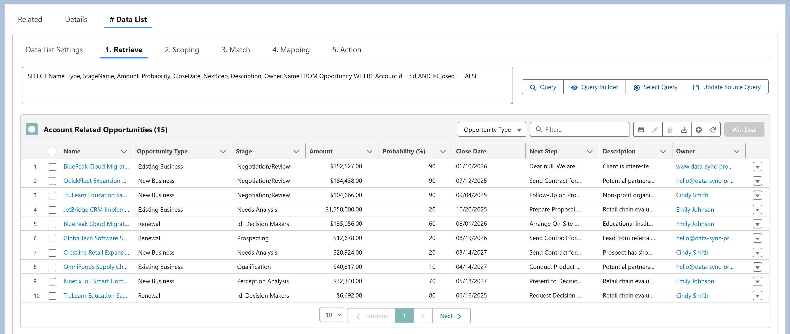

The Retrieve step defines how source data is queried from a connected Salesforce org. It's the entry point for record selection in both #Batches and #Data Lists.
In #Batch: Retrieve specifies the source records for
batch execution—similar to the start() method in Salesforce's
Database.Batchable interface.
In #Data List: Retrieve defines the SOQL query used to display records to users in the UI.
At runtime, DSP automatically fetches only the fields required by downstream steps (Scoping, Match, Mapping). Fields selected in the Retrieve query are used mainly for preview and display.
